Escola d'Arts i Oficis, Barcelona 2004
Vull dedicar aquest treball a en Josep Asunción, pel seu entusiasme, i a Maria Cosmes, per les seves converses.
Ells han estat els catalitzadors d'aquest treball.
Vull agrair també la col·laboració de l'Escola d'Arts i Oficis Escola del Treball per a la realització de la instal·lació.
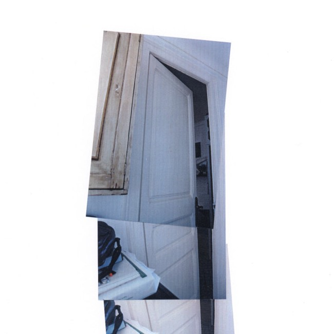 |
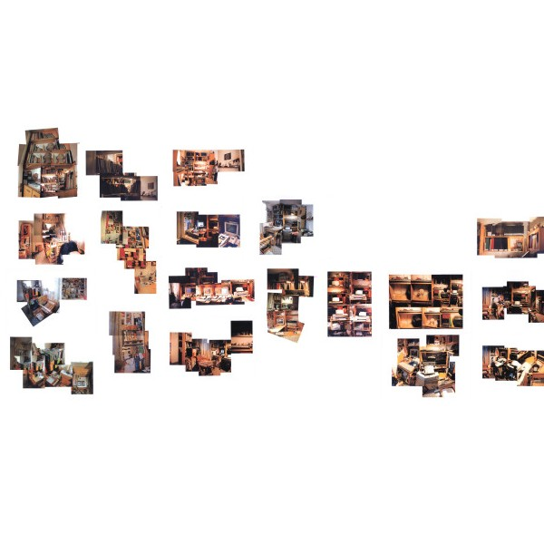 |
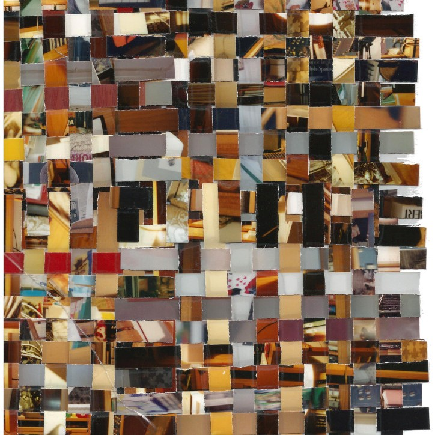 |
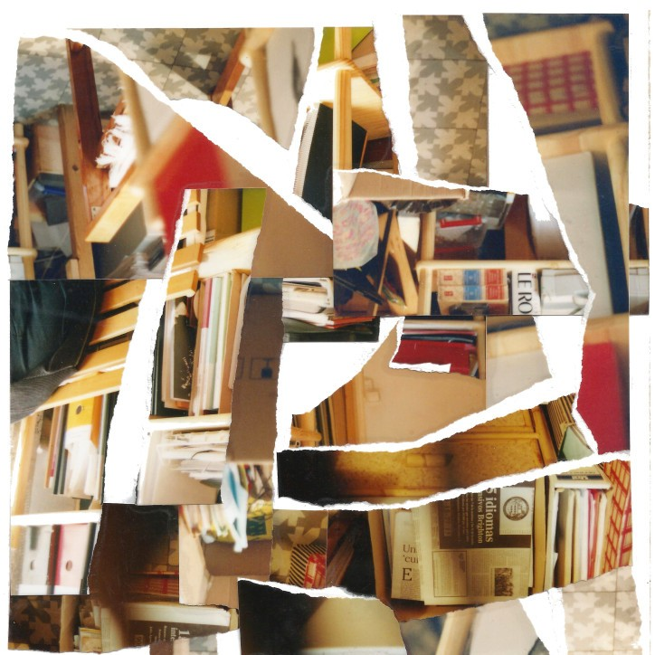 |
| Dimensió 2D - collages fotos: Carlos Pina |
Dimensió 2D - mapes fotos: Carlos Pina |
Dimensió 2D - teixits fotos: Carlos Pina |
Dimensió 2D - restes fotos: Carlos Pina |
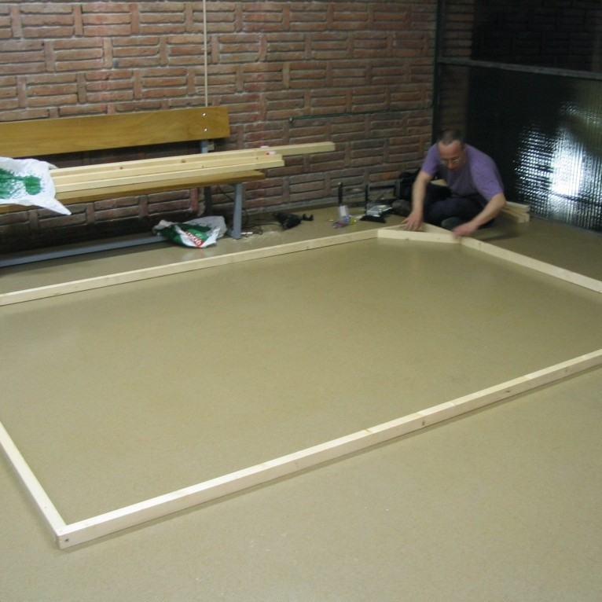 |
|||
| Dimensió 3D - instal·lació fotos: Carlos Pina, Josep Asunción, Maria Cosmes |
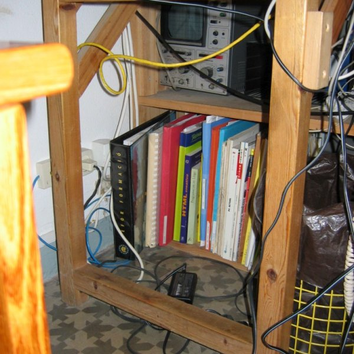 |
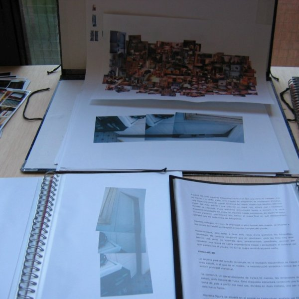 |
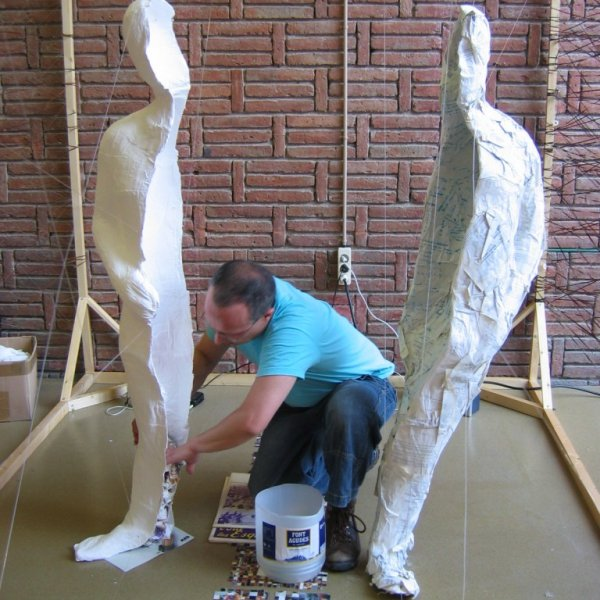 |
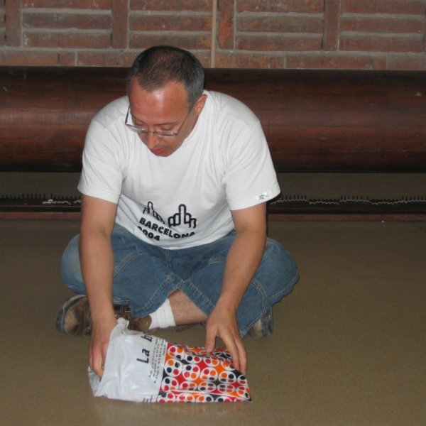 |
|
Dimensió T día 0: preparació en estudi fotos: Carlos Pina |
Dimensió T día 1: matemàtiques i tecnologia fotos: Carlos Pina, Josep Asunción, Maria Cosmes |
Dimensió T día 2: història, política i ideologia fotos: Carlos Pina, Josep Asunción, Maria Cosmes |
Dimensió T día 3: topografíes de l'entorn (1992-2004) fotos: Carlos Pina, Josep Asunción, Maria Cosmes |
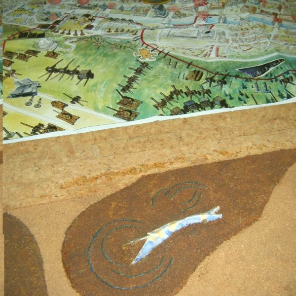 |
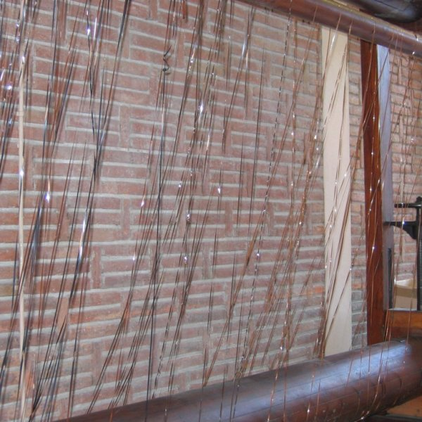 |
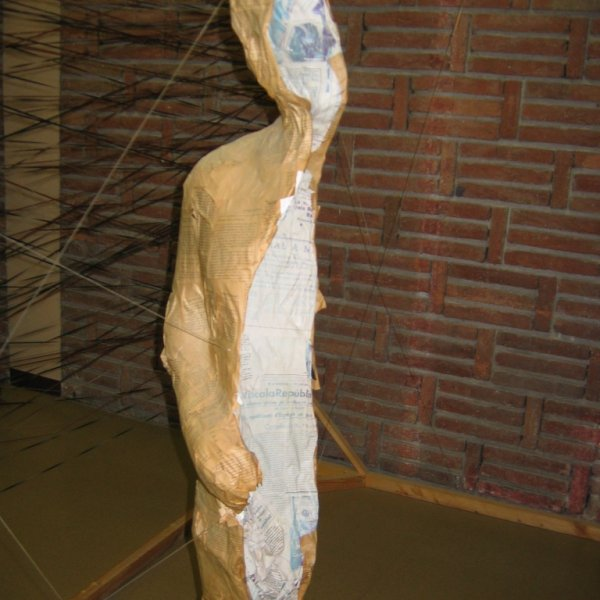 |
|
|
Dimensió T día 4: Barcelona, la ciutat i els jocs fotos: Carlos Pina, Josep Asunción, Maria Cosmes |
Dimensió T día 5: lectures i reflexions fotos: Carlos Pina, Josep Asunción, Maria Cosmes |
Dimensió T día 6: restes de l'acció fotos: Carlos Pina |
La intenció d'aquest treball és la recreació del meu espai personal, en el doble sentit de recreació=imitació i re-creació=regeneració. Vull recrear aquest espai personal i crear dins del mateix un espai buit a la meva mida, conformant una nova dimensió de l'espai, una dimensió íntima i personal, un espai buit entre les dues parts de la figura dins de l'espai obert i alhora tancat que és l'estructura dins de l'espai també obert i acotat de la sala on s'exposarà.
Aquest treball unifica finalment les meves sèries Contextos i Entorns i es planteja com el punt final d'un procés artístic i personal de desconstrucció i reconstrucció començat el 2000. Aquesta proposta és la constatació que totes dues sèries són realment una mateixa línia de treball, ja que formen part d'un mateix procés artístic i personal.
Al llarg del treball dins de totes dues sèries he realitzat, individualment o col·lectivament, tota una sèrie d'accions, instal·lacions i altres objectes, encaminats en primer lloc a reubicar-me dins del meu context personal i artístic per a acabar reconstruint un espai personal, físic i psíquic, propi.
Per a simbolitzar aquesta unió entre totes dues línies de treball, vull jugar amb la doble lectura de la paraula castellana Entorn, que parlaria de l'entorn i que també remetria a parlar entorn d'una cosa, és a dir, a contextualitzar.
Aquesta última part del procés s'ha plantejat com un treball continuat al llarg de tot el curs acadèmic dins de l'Aula de Creacions Intermèdia que imparteix Josep Asunción a l'Escola d'Arts i Oficis.
dimensió 2D
Al llarg dels quatre últims anys he anat fotografiant el meu estudi, reflectint tots els canvis en la reordenació de l'espai i els elements que contenia, i per tant la variació dels meus focus d'interès i de prioritats que s'han succeït al llarg d'aquest temps.
La primera part d'aquest treball va consistir en la reutilització de totes les fotografies. A partir de totes aquelles fotografies havia anat fent una sèrie de collages, més de trenta, i a partir d'ells vaig crear una sèrie de mapes simbòlics de l'espai, mapes que recollien diferents vistes del meu estudi i que creaven un espai nou, alhora real i inexistent, donada la repetició d'uns elements estructurals iguals o similars i la seva disposició impossible en el pla. En aquests mapes successius, els espais en blanc inicials s'anaven concentrant fins a arribar al mapa final en què desapareixien gairebé tots els buits entre les fotografies.
Posteriorment, vaig tallar a tires les fotografies, respectant els costats irregulars que van quedar. Amb les tires vaig anar teixint una sèrie de quadrats que, plastificats, servirien per a construir un tipus de catifa representant l'espai i simbolitzant el substrat del qual parteix tot el procés.
dimensió 3D
La segona part del procés va consistir en la recreació esquemàtica de l'espai del meu estudi, o el que és el mateix, la reconstrucció simbòlica i mítica del meu entorn principal immediat.
Vaig construir un paral·lelepípede de 2x3x2,35 metres, les dimensions del meu estudi, amb llistons de fusta. Dins d'aquesta estructura vaig situar una figura en bena de guix construïda a partir del meu cos, dividida en dues meitats, una per cadascun dels meus flancs.
Aquesta figura se situava en el centre de l'estructura, subjecta per fils de nilon, amb les dues meitats separades, de tal manera que els fils no impedissin que una persona pugui passar entre mig d'elles.
En els laterals de l'estructura es va teixir una trama amb fils de nilon, una espècie de parets infranquejables però a través de les quals es podia veure perfectament l'interior.
dimensión T
La tercera part d'aquest procés va ser un procés performàtic, en el qual em vaig desfer, igual que en altres performances de la sèrie Contextos, de la resta de documents que encara conservava en el meu estudi, tant documents en paper com part del meu arxiu musical, principalment de cintes de casette a partir de la segona meitat dels 80, que anaven sonant en dos equips de so simultàniament.
La meva intenció era recrear en aquest espai fictici un espai lligat a la meva història personal. Aquesta performance va tenir una durada de 20 hores, al llarg de totes les tardes d'una setmana. El públic podia entrar i sortir lliurement de la sala on es realitzava l'acció i anar passant per tot l'espai, al voltant de l'estructura i fins i tot endins.
Al llarg de l'acció anava repassant, llegint o comentant, a vegades només mirant per damunt, tots els papers que guardava des de feia anys i reflexionar en veu alta sobre el context en el qual vaig decidir de conservar-los, llavors i ara, respecte a mi, el perquè els havia guardat i per què em desfeia, o no, llavors; i fer el mateix amb les cintes de casette. Repassant per última vegada els papers volia resituar-me dins del meu context personal, social i cultural.
Amb part dels papers vaig anar recobrint la figura de guix, tan exteriorment però sobretot interiorment, fins a arribar a tapar part del buit que havia deixat el meu cos. D'aquesta manera, aquestes deixalles o despulles guardades durant tant de temps, una vegada posats en el seu context, quedaven incorporats a la meva representació simbòlica, per a poder seguir endavant en un entorn físic més alleugerit, ja que tots els papers i cintes estaven dins del meu estudi, però també en un entorn personal nou, una vegada assumit i arxivat el passat, descartant el que ja no interessava i recuperant allò que tal vegada havia oblidat que vaig ser. Una vegada coberta la figura, la resta dels papers no utilitzats i que no m'interessava conservar per alguna raó van quedar al voltant de la instal·lació o van anar, senzillament, a les escombraries. La gent que passava per la sala podia, si així ho volia, emportar-se allò que volgués. Es completava així aquest treball de més de quatre anys de desconstrucció per a la reconstrucció.
Tant el fet de teixir les tires de les fotografies com la de recobrir la figura de guix amb papers remeten directament a la idea de vestir, entenent el vestit com la construcció social i cultural que és, que en la seva funció de recobriment serveix per a protegir-nos dels altres i que en la seva funció d'ornat serveix per a donar als altres la imatge que volem que percebin de nosaltres.
Últimament he pensat molt en el meu treball dins de la sèrie Contextos com en un treball autoejecutable, que conté l'obra i la seva explicació. Per a mi és molt important el fet de situar la creació artística en el seu context, fugint deliberadament de tot cripticisme, tema que entroncaria també amb una altra de les meves preocupacions en els últims temps a partir del meu treball comisarial, ja que per a mi, en l'art d'avui han de ser més importants les formes que la forma.
No crec, de totes maneres, que amb les explicacions que dono en el transcurs deles meves performances quedi esgotat el significat d'aquestes. El mateix procés de reflexió prèvia és per a mi tan important com la mateixa realització, per les idees que aporta, així com ho és el procés d'anàlisi i reflexió posterior. Tot i així, no crec que el significat quedi encara esgotat amb tot aquest procés dut a terme per l'artista, sinó que estic fermament convençut que és el públic qui fa que l'obra arribi a la seva plenitud a través de tot allò que l'obra els evoca. Perquè l'evocació és capaç de partir de símbols coneguts per a arribar a crear nous pensaments, nous significats; perquè, com ja he dit en altres ocasions referint-me concretament a la performance, és capaç de crear nous valors culturals.
Tota aquesta sèrie vol reflexionar sobre l'acumulació d'objectes. Guardem coses durant anys i sovint no les tornem a mirar. Les guardem per moltes raons, perquè ens recorden el que hem fet, perquè esperem revisar-les més endavant... I al final no tornem mai a elles, es converteixen en un llast, físic però també mental, que augmenta amb el temps i perd el seu sentit, conventint-se en pesades cadenes que ens lliguen a un passat que ja no tornarà. Amb aquest treball volia fer, doncs, una última visita abans de desfer-me definitivament, per a recordar allò que vaig ser i que ja no sóc i integrar-ho en la meva història personal, abandonant el material per a quedar-me només amb el record. Vivim en una societat fetitxista, que prima l'acumulació d'objectes, que valora per sobre de tot la informació, quan mai podrem llegir tot allò que s'escriu. En una societat anomenada "de la informació", en què la informació es considera font de poder, la meva acció té un rerefons subversiu perquè destrueix informació. Perquè el que realment som és la nostra història, les nostres vivències i records i les nostres relacions actuals, no aquells objectes que ens remeten al passat. I cal passar pàgina per a continuar vivint. Incorporant i abandonant l'acumulat al llarg dels anys sobre la representació de la meva figura, vull simbolitzar que el que importa no són les coses sinó el pòsit que deixen, allò que queda en el record i que ha fet de nosaltres el que ara som.
Algunes citacions de Milan Kundera (La ignorancia. Tusquets, 2000, pp 77-78, 84- 85)
Lo abre: su diario de cuando estudiaba bachillerato. (…) Lee aquello y no se acuerda de nada. ¿Qué habrá venido a decirle ese desconocido? ¿Recordarle que, en aquel entonces, vivió aquí con su nombre? (…)
Desde entonces se deja seducir por este tipo de afinidades, por esos contactos furtivos entre el presente y el pasado, busca esos ecos, esas correspondencias, esas corresonancias que le permiten sentir la distancia entre lo que fue y lo que es, la dimension temporal (tan nueva, tan sorprendente) de su vida; tiene la impresión de salir así de la adolescencia, de madurar, de ser adulta, y eso significa para ella convertirse en alguien con conocimiento del tiempo, alguien que ha dejado atrás su fragmento de vida y es capaz de volver la vista para contemplarlo.